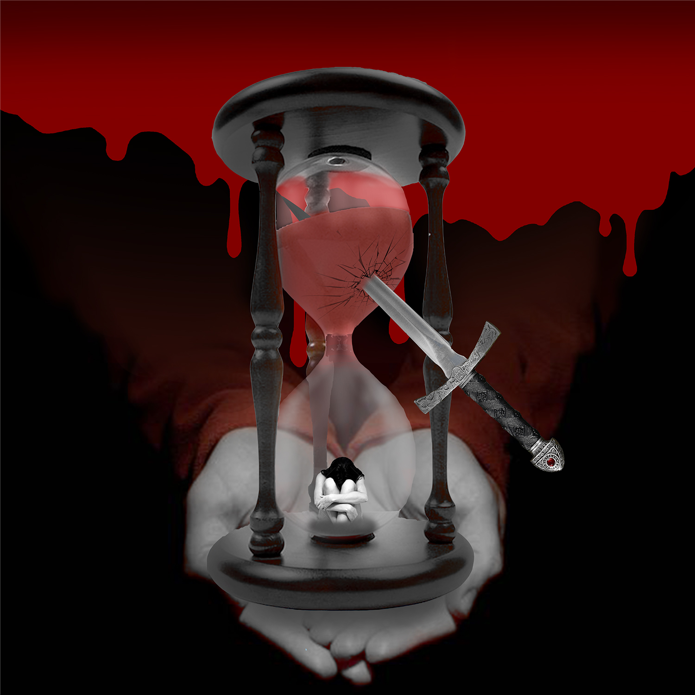
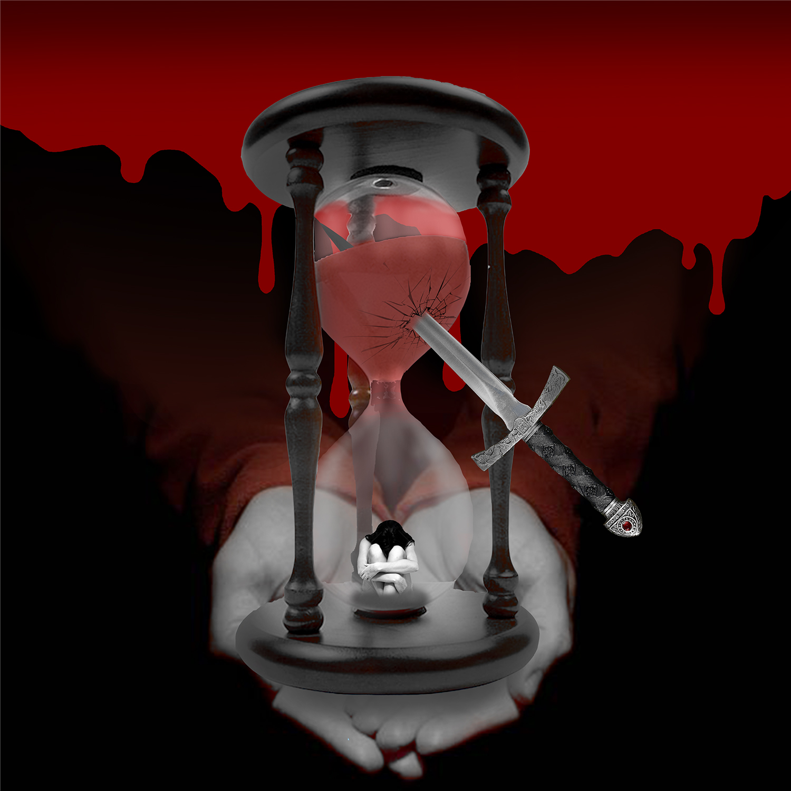

THIS SPACE WILL BE USED FOR THE UPCOMING PHOTOSHOP CHALLANGE ...Well, Broadway, same story. Every audition. I mean I’d dance rings around the other girls and find myself in the alley with the other rejects. But after a while I caught on. I mean I had eyes. I saw what they were hiring. I also swiped my dance card once after an audition. And on a scale of 10….they gave me for dance 10. For looks: 3.”
 


Hi! I am Sydney DeFelix! I have been an artist since I was about 11, switching up between drawing, painting, airbrushing, and digital arts. I was born April 26th, 2003 in Richmond, Virginia. And I am currently a Sophmore at UWF. Some other things I get myself into are tattoo commissions, Twitch overlay commissions, and being a Twitch streamer myself! Visit my channel @Twitch.tv
Here are some nice shots I've gotten in stream!
*[WARNING 17+ CONTENT (GAME RATED M)]*
I also dabbled in Theater for a while as a Technical Director and Lighting Director. Which is mainly organizing and designing all of the technical sides of a show. Props, set, lights, sounds, and costuming, while directing the leaders of those teams to finish all needed work before show day! It was always a lot of fun to do! ;)

Well, Broadway, same story. Every audition. I mean I’d dance rings around the other girls and find myself in the alley with the other rejects. But after a while I caught on. I mean I had eyes. I saw what they were hiring. I also swiped my dance card once after an audition. And on a scale of 10….they gave me for dance 10. For looks: 3.”